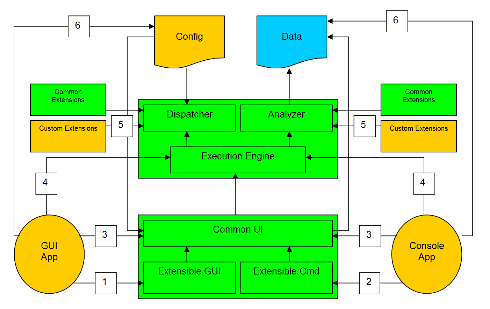

| Best Practices Analyzer Core Library |
| Components |
The Components
The BPA core library is arranged into a number of components which
each have well-defined boundaries. The following picture shows
these components and the various ways they can be accessed by external
code:

The components can be broken down as follows:
- The Core Engine. The top green box containing the
Execution Engine, the Dispatcher, and the Analyzer comprise the core
engine. This code is contained in BPA.Common.dll, and the
namespace associated with all the classes in it is
Microsoft.WindowsServerSystem.BestPracticesAnaylzer.Common.
- The UI Code. The bottom green box containing the
Common UI, Extensible GUI, and Extensible Cmd comprise the common UI
code. This is contained in BPA.UserInterface.dll, and the namespace
associated with all the classes in it is
Microsoft.WindowsServerSystem.BestPracticesAnalyzer.UserInterface.
- The Common Extensions. The two green side boxes
labeled Common Extensions contain all the extensions that have
already been developed. These include object processors, rule
processors, event processors, format processors, and configuration
preprocessors. More extensions may be added to this library as
they get created, both by product teams and by the core BPA team.
These are contained in a number of different dll's, but the
namespace associated with all the classes is Microsoft.WindowsServerSystem.BestPracticesAnalyzer.Extensions.
- The Data Document. The blue document icon labeled
Data represents the output of a run.
- A GUI Application. This, like all the orange
colored components is code that needs to be supplied by a product
team (although as part of the SDK a skeleton will be provided).
This is a GUI application that will execute best practices.
This could be a independent tool that is designed solely for this
purpose, or this may be an integrated part of a product. That
is up to each team to decide. The GUI application can plug
into the BPA library at a number of different points. These
are labeled 1, 3, 4 and 6 and each one is described below. The
provided skeleton code uses interface point number 1. See
GUI Extensions for details on what
the GUI looks like and what can be customized.
- A Console Application. This is a similar story to
the GUI application in that a product team needs to create this.
Note that certain functions, such as scheduling and any other things
that need scripting, require a console version to exist in order to
work. Like a GUI application this can access the library at
several different points, which are labeled above and described
below.
- Custom Extensions. These must be created by a
product team as needed. If new custom extensions are created
that are of general use, they may get incorporated into the common
extensions library.
The Interfaces
There are a number of different points at which external code can
access the BPA library. These points are labeled 1 through 6 in
the diagram above. Each point represents a well-defined and
well-documented interface:
- This is the highest level a GUI application can access and it
uses the most shared code from the BPA library. At this level,
the GUI is basically all laid out and the application just needs to
specify a few parameters on their specific needs. This main
class is UserInterface.MainGUI, which defines the overall UI framework and logic
flow. There are a number of other classes this uses, and they
are fully described in the API documention. The major ones
are:
- UserInterface.BPACustomizations. This allows the
application to define customizations to the UI.
- UserInterface.BPAScreen. This allows the application
to create their own custom screens to be used for getting run
time options.
- UserInterface.BPAReport. This allows the application
to create their own custom reports.
- This is the highest level a console application can access and
it also uses the most shared code from the BPA library. The
main class is UserInterface.MainCmd. This also uses
UserInterface.BPACustomizations.
- At this level, the application has much more freedom regarding
how the UI will look (which also means it requires much more work to
develop), but it still gains the benefit of some shared
functionality such as parsing data from the configuration or data
files, help in generating reports, auto-download logic, etc.
There are many different classes available at this level and they
are fully described in the API documentation. The main classes
at this level are:
- UserInterface.ConfigurationInfo. This provides access
to and information on a configuration file.
- UserInterface.DataInfo. This provides access to and
information on a data file.
- UserInterface.UpdateInfo. This allows for checking for
and auto-downloading updates.
- This is the lowest level an application can access the library
at. It provides only the data gathering and analysis
functionality. The main classes at this level are Common.ExecutionInterface
and Common.ExecutionOptions and they are fully described in the API
documentation, along with related classes.
- These represent the classes that the core extensions use to
provide specific functionality. These are also fully described
in the API documentation.
- This is direct access to the configuration and/or data files.
These files are in XML format and can be access directly using .NET
frameworks methods, or they can use the Common.BPADocument classes provided
as part of the core engine.